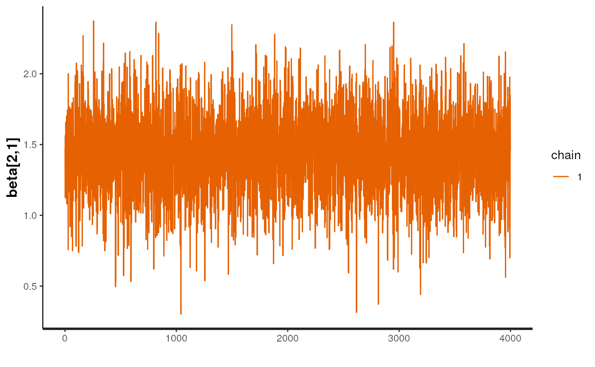

Overview of the sccomp package
Stefano Mangiola
2024-03-06
Source:vignettes/introduction.Rmd
introduction.Rmd

Installation
Bioconductor
if (!requireNamespace("BiocManager")) install.packages("BiocManager")
BiocManager::install("sccomp")Github
devtools::install_github("stemangiola/sccomp")Analysis
sccomp can model changes in composition and variability.
By default, the formula for variability is either ~1, which
assumes that the cell-group variability is independent of any covariate
or ~ factor_of_interest, which assumes that the model is
dependent on the factor of interest only. The variability model must be
a subset of the model for composition.
Binary factor
From Seurat, SingleCellExperiment, metadata objects
single_cell_object |>
sccomp_estimate(
formula_composition = ~ type,
.sample = sample,
.cell_group = cell_group,
bimodal_mean_variability_association = TRUE,
cores = 1
)From counts
counts_obj |>
sccomp_estimate(
formula_composition = ~ type,
.sample = sample,
.cell_group = cell_group,
.count = count,
bimodal_mean_variability_association = TRUE,
cores = 1
)##
## SAMPLING FOR MODEL 'glm_multi_beta_binomial' NOW (CHAIN 1).
## Chain 1:
## Chain 1: Gradient evaluation took 0.000478 seconds
## Chain 1: 1000 transitions using 10 leapfrog steps per transition would take 4.78 seconds.
## Chain 1: Adjust your expectations accordingly!
## Chain 1:
## Chain 1:
## Chain 1: Iteration: 1 / 4300 [ 0%] (Warmup)
## Chain 1: Iteration: 301 / 4300 [ 7%] (Sampling)
## Chain 1: Iteration: 1300 / 4300 [ 30%] (Sampling)
## Chain 1: Iteration: 2300 / 4300 [ 53%] (Sampling)
## Chain 1: Iteration: 3300 / 4300 [ 76%] (Sampling)
## Chain 1: Iteration: 4300 / 4300 [100%] (Sampling)
## Chain 1:
## Chain 1: Elapsed Time: 3.015 seconds (Warm-up)
## Chain 1: 21.414 seconds (Sampling)
## Chain 1: 24.429 seconds (Total)
## Chain 1:## # A tibble: 72 × 14
## cell_group parameter factor c_lower c_effect c_upper c_n_eff c_R_k_hat
## <chr> <chr> <chr> <dbl> <dbl> <dbl> <dbl> <dbl>
## 1 B1 (Intercept) NA 0.860 1.11 1.36 6014. 1.00
## 2 B1 typecancer type -1.07 -0.642 -0.256 4212. 1.00
## 3 B2 (Intercept) NA 0.400 0.694 0.985 5112. 1.00
## 4 B2 typecancer type -1.22 -0.726 -0.245 5243. 1.00
## 5 B3 (Intercept) NA -0.662 -0.390 -0.119 5008. 1.00
## 6 B3 typecancer type -0.728 -0.308 0.0763 4115. 1.00
## 7 BM (Intercept) NA -1.34 -1.03 -0.752 5883. 1.00
## 8 BM typecancer type -0.733 -0.313 0.102 4998. 1.00
## 9 CD4 1 (Intercept) NA 0.0621 0.294 0.503 4634. 1.00
## 10 CD4 1 typecancer type -0.0971 0.186 0.486 4133. 1.00
## # ℹ 62 more rows
## # ℹ 6 more variables: v_lower <dbl>, v_effect <dbl>, v_upper <dbl>,
## # v_n_eff <dbl>, v_R_k_hat <dbl>, count_data <list>Of the output table, the estimate columns start with the prefix
c_ indicate composition, or with
v_ indicate variability (when
formula_variability is set).
Contrasts
seurat_obj |>
sccomp_estimate(
formula_composition = ~ 0 + type,
.sample = sample,
.cell_group = cell_group,
bimodal_mean_variability_association = TRUE,
cores = 1
) |>
sccomp_test( contrasts = c("typecancer - typehealthy", "typehealthy - typecancer"))##
## SAMPLING FOR MODEL 'glm_multi_beta_binomial' NOW (CHAIN 1).
## Chain 1:
## Chain 1: Gradient evaluation took 0.000311 seconds
## Chain 1: 1000 transitions using 10 leapfrog steps per transition would take 3.11 seconds.
## Chain 1: Adjust your expectations accordingly!
## Chain 1:
## Chain 1:
## Chain 1: Iteration: 1 / 4300 [ 0%] (Warmup)
## Chain 1: Iteration: 301 / 4300 [ 7%] (Sampling)
## Chain 1: Iteration: 1300 / 4300 [ 30%] (Sampling)
## Chain 1: Iteration: 2300 / 4300 [ 53%] (Sampling)
## Chain 1: Iteration: 3300 / 4300 [ 76%] (Sampling)
## Chain 1: Iteration: 4300 / 4300 [100%] (Sampling)
## Chain 1:
## Chain 1: Elapsed Time: 2.185 seconds (Warm-up)
## Chain 1: 17.726 seconds (Sampling)
## Chain 1: 19.911 seconds (Total)
## Chain 1:## # A tibble: 60 × 18
## cell_group parameter factor c_lower c_effect c_upper c_pH0 c_FDR c_n_eff
## <chr> <chr> <chr> <dbl> <dbl> <dbl> <dbl> <dbl> <dbl>
## 1 B immature typecanc… NA -1.91 -1.39 -0.877 0 0 NA
## 2 B immature typeheal… NA 0.877 1.39 1.91 0 0 NA
## 3 B mem typecanc… NA -2.32 -1.72 -1.07 0 0 NA
## 4 B mem typeheal… NA 1.07 1.72 2.32 0 0 NA
## 5 CD4 cm S10… typecanc… NA -1.48 -1.03 -0.611 2.50e-4 6.25e-5 NA
## 6 CD4 cm S10… typeheal… NA 0.611 1.03 1.48 2.50e-4 6.25e-5 NA
## 7 CD4 cm hig… typecanc… NA 0.826 1.76 2.85 1.00e-3 2.50e-4 NA
## 8 CD4 cm hig… typeheal… NA -2.85 -1.76 -0.826 1.00e-3 2.50e-4 NA
## 9 CD4 cm rib… typecanc… NA 0.277 0.995 1.72 1.60e-2 4.03e-3 NA
## 10 CD4 cm rib… typeheal… NA -1.72 -0.995 -0.277 1.60e-2 4.03e-3 NA
## # ℹ 50 more rows
## # ℹ 9 more variables: c_R_k_hat <dbl>, v_lower <dbl>, v_effect <dbl>,
## # v_upper <dbl>, v_pH0 <dbl>, v_FDR <dbl>, v_n_eff <dbl>, v_R_k_hat <dbl>,
## # count_data <list>Categorical factor (e.g. Bayesian ANOVA)
This is achieved through model comparison with loo. In
the following example, the model with association with factors better
fits the data compared to the baseline model with no factor association.
For comparisons check_outliers must be set to FALSE as the
leave-one-out must work with the same amount of data, while outlier
elimination does not guarantee it.
If elpd_diff is away from zero of > 5
se_diff difference of 5, we are confident that a model is
better than the other reference.
In this case, -79.9 / 11.5 = -6.9, therefore we can conclude that model
one, the one with factor association, is better than model two.
library(loo)
# Fit first model
model_with_factor_association =
seurat_obj |>
sccomp_estimate(
formula_composition = ~ type,
.sample = sample,
.cell_group = cell_group,
check_outliers = FALSE,
bimodal_mean_variability_association = TRUE,
cores = 1,
enable_loo = TRUE
)
# Fit second model
model_without_association =
seurat_obj |>
sccomp_estimate(
formula_composition = ~ 1,
.sample = sample,
.cell_group = cell_group,
check_outliers = FALSE,
bimodal_mean_variability_association = TRUE,
cores = 1 ,
enable_loo = TRUE
)
# Compare models
loo_compare(
model_with_factor_association |> attr("fit") |> loo(),
model_without_association |> attr("fit") |> loo()
)Differential variability, binary factor
We can model the cell-group variability also dependent on the type, and so test differences in variability
res =
seurat_obj |>
sccomp_estimate(
formula_composition = ~ type,
formula_variability = ~ type,
.sample = sample,
.cell_group = cell_group,
bimodal_mean_variability_association = TRUE,
cores = 1
)##
## SAMPLING FOR MODEL 'glm_multi_beta_binomial' NOW (CHAIN 1).
## Chain 1:
## Chain 1: Gradient evaluation took 0.000294 seconds
## Chain 1: 1000 transitions using 10 leapfrog steps per transition would take 2.94 seconds.
## Chain 1: Adjust your expectations accordingly!
## Chain 1:
## Chain 1:
## Chain 1: Iteration: 1 / 4300 [ 0%] (Warmup)
## Chain 1: Iteration: 301 / 4300 [ 7%] (Sampling)
## Chain 1: Iteration: 1300 / 4300 [ 30%] (Sampling)
## Chain 1: Iteration: 2300 / 4300 [ 53%] (Sampling)
## Chain 1: Iteration: 3300 / 4300 [ 76%] (Sampling)
## Chain 1: Iteration: 4300 / 4300 [100%] (Sampling)
## Chain 1:
## Chain 1: Elapsed Time: 3.967 seconds (Warm-up)
## Chain 1: 35.034 seconds (Sampling)
## Chain 1: 39.001 seconds (Total)
## Chain 1:
res## # A tibble: 60 × 14
## cell_group parameter factor c_lower c_effect c_upper c_n_eff c_R_k_hat
## <chr> <chr> <chr> <dbl> <dbl> <dbl> <dbl> <dbl>
## 1 B immature (Interce… NA 0.356 0.772 1.19 7422. 1.00
## 2 B immature typeheal… type 0.848 1.43 2.00 6328. 1.00
## 3 B mem (Interce… NA -1.49 -0.872 -0.171 4733. 1.00
## 4 B mem typeheal… type 1.05 1.87 2.64 4561. 1.00
## 5 CD4 cm S100A4 (Interce… NA 1.32 1.66 1.99 5902. 1.00
## 6 CD4 cm S100A4 typeheal… type 0.486 0.945 1.40 5581. 1.00
## 7 CD4 cm high cyto… (Interce… NA -1.01 -0.539 0.0465 4249. 1.00
## 8 CD4 cm high cyto… typeheal… type -3.07 -1.25 1.23 4154. 1.00
## 9 CD4 cm ribosome (Interce… NA -0.0646 0.311 0.697 4641. 1.00
## 10 CD4 cm ribosome typeheal… type -1.82 -0.954 0.0928 4626. 1.00
## # ℹ 50 more rows
## # ℹ 6 more variables: v_lower <dbl>, v_effect <dbl>, v_upper <dbl>,
## # v_n_eff <dbl>, v_R_k_hat <dbl>, count_data <list>Suggested settings
Visualisation
Summary plots
plots = res |> sccomp_test() |> plot_summary() ## Warning: `plot_summary()` was deprecated in sccomp 1.7.1.
## ℹ sccomp says: plot_summary() is soft-deprecated. Please use sccomp_test().
## This warning is displayed once every 8 hours.
## Call `lifecycle::last_lifecycle_warnings()` to see where this warning was
## generated.## cell_group parameter factor c_lower c_effect
## 1 B immature (Intercept) <NA> 0.35562304 0.772417788
## 2 B immature typehealthy type 0.84842118 1.432739599
## 3 B mem (Intercept) <NA> -1.49133410 -0.871836258
## 4 B mem typehealthy type 1.05229852 1.873073253
## 5 CD4 cm S100A4 (Intercept) <NA> 1.31580390 1.656988356
## 6 CD4 cm S100A4 typehealthy type 0.48638939 0.945397404
## 7 CD4 cm high cytokine (Intercept) <NA> -1.01202083 -0.539365370
## 8 CD4 cm high cytokine typehealthy type -3.06847452 -1.249441303
## 9 CD4 cm ribosome (Intercept) <NA> -0.06462835 0.311357511
## 10 CD4 cm ribosome typehealthy type -1.81596826 -0.954009002
## 11 CD4 em high cytokine (Intercept) <NA> -1.16778576 -0.711178310
## 12 CD4 em high cytokine typehealthy type -2.37805644 -1.288650477
## 13 CD4 naive (Intercept) <NA> 0.75844702 1.218996993
## 14 CD4 naive typehealthy type 0.46913144 1.129796103
## 15 CD4 ribosome (Intercept) <NA> -0.30028127 0.044498150
## 16 CD4 ribosome typehealthy type 1.50538434 2.064094150
## 17 CD8 em 1 (Intercept) <NA> 0.30535352 0.680903447
## 18 CD8 em 1 typehealthy type -0.01222164 0.792912788
## 19 CD8 em 2 (Intercept) <NA> -0.87486436 0.138299828
## 20 CD8 em 2 typehealthy type -3.64970230 -1.158341298
## 21 CD8 em 3 (Intercept) <NA> -1.36182383 -0.672601215
## 22 CD8 em 3 typehealthy type -1.75697079 -0.811009862
## 23 CD8 naive (Intercept) <NA> 0.60035564 1.012130662
## 24 CD8 naive typehealthy type -0.70304905 0.014161890
## 25 CD8 transitional (Intercept) <NA> 0.91133876 1.210067833
## 26 CD8 transitional typehealthy type 0.17848716 0.682856365
## 27 MAIT (Intercept) <NA> -1.06650188 -0.605483906
## 28 MAIT typehealthy type 0.43805320 1.224513591
## 29 Mac M1 (Intercept) <NA> 0.63165363 0.951595767
## 30 Mac M1 typehealthy type 0.03369349 0.594914660
## 31 Mac M1 FCER1A (Intercept) <NA> -1.34934933 -0.987799954
## 32 Mac M1 FCER1A typehealthy type -1.79419754 -1.066829886
## 33 Mono (Intercept) <NA> -1.82782253 -1.339683842
## 34 Mono typehealthy type -0.81118206 -0.096998503
## 35 Mono NKG7 1 (Intercept) <NA> -1.47607756 -0.860051455
## 36 Mono NKG7 1 typehealthy type -4.02085712 -2.885448677
## 37 Mono NKG7 2 (Intercept) <NA> -0.40778787 -0.007366583
## 38 Mono NKG7 2 typehealthy type -2.44704004 -1.287435241
## 39 Mono classic inflam (Intercept) <NA> 1.50004368 1.785324227
## 40 Mono classic inflam typehealthy type -1.24368394 -0.462083616
## 41 Mono non-classic (Intercept) <NA> 0.61291105 0.957468576
## 42 Mono non-classic typehealthy type -0.59642517 0.004639137
## 43 Myeloid migratory (Intercept) <NA> -0.34516671 0.017088757
## 44 Myeloid migratory typehealthy type -1.33552165 -0.551577094
## 45 NK (Intercept) <NA> 1.14026483 1.434283052
## 46 NK typehealthy type -0.06038097 0.543601848
## 47 NK cycling (Intercept) <NA> -1.64115926 -1.220103022
## 48 NK cycling typehealthy type -0.81282324 -0.183647483
## 49 NK high cytokine (Intercept) <NA> -2.22899618 -1.633927516
## 50 NK high cytokine typehealthy type -1.19750663 0.034694726
## 51 Stem (Intercept) <NA> -1.06761808 -0.576861642
## 52 Stem typehealthy type -3.23788451 -2.255131087
## 53 T gd1 (Intercept) <NA> -1.05976790 -0.687840841
## 54 T gd1 typehealthy type 0.07368105 0.906934037
## 55 T gd2 (Intercept) <NA> -1.22509754 -0.672238683
## 56 T gd2 typehealthy type -0.38299870 0.528785804
## 57 cDC2 (Intercept) <NA> -0.76448760 -0.291231746
## 58 cDC2 typehealthy type -0.37968189 0.326147264
## 59 pDC (Intercept) <NA> -1.15000002 -0.675841181
## 60 pDC typehealthy type -0.10480517 0.685174227
## c_upper c_pH0 c_FDR c_n_eff c_R_k_hat v_lower
## 1 1.187393959 0.00525 4.807692e-04 7422.330 0.9999678 -4.5033121249
## 2 2.004737943 0.00025 8.333333e-05 6327.509 1.0000488 -1.6767775656
## 3 -0.170513164 0.02750 4.691176e-03 4732.989 0.9997947 -5.3231340108
## 4 2.637497414 0.00000 0.000000e+00 4561.381 0.9997822 -2.0650617217
## 5 1.993967569 0.00000 0.000000e+00 5901.745 0.9997799 -3.8680531354
## 6 1.396673043 0.00225 6.250000e-04 5580.909 1.0000267 -2.0976271822
## 7 0.046512072 0.10875 1.991304e-02 4248.566 0.9997655 -5.4625804482
## 8 1.229586106 0.19975 5.840476e-02 4154.086 0.9999301 -0.4805068848
## 9 0.696939729 0.27800 3.427000e-02 4640.769 0.9997738 -5.3426646922
## 10 0.092766772 0.07300 2.000000e-02 4626.093 0.9997836 -0.5381607352
## 11 -0.214460859 0.02025 3.265625e-03 4611.924 0.9997589 -5.9107183609
## 12 0.165809207 0.06275 1.558333e-02 3321.269 0.9997735 -1.0458357608
## 13 1.637732466 0.00000 0.000000e+00 5802.441 0.9997500 -3.6864833127
## 14 1.785435206 0.00250 1.000000e-03 5455.878 0.9997743 -0.8692850488
## 15 0.429164904 0.81025 9.143750e-02 4785.495 0.9999904 -5.6803671415
## 16 2.606246579 0.00000 0.000000e+00 4826.245 0.9998105 -0.6149572657
## 17 1.063259070 0.00775 1.000000e-03 4232.901 0.9997905 -4.7566767514
## 18 1.572296356 0.07525 2.394643e-02 5336.145 0.9997658 0.0006428386
## 19 1.219070019 0.54500 6.481481e-02 3669.243 0.9998574 -3.6576917127
## 20 1.304466024 0.22150 6.581818e-02 4065.594 0.9999245 -1.5962993795
## 21 0.202886849 0.12075 2.411458e-02 3071.236 0.9997517 -4.7065241196
## 22 0.007989225 0.08150 2.778333e-02 2829.096 1.0000896 -4.1734177041
## 23 1.426234407 0.00000 0.000000e+00 4539.985 0.9999331 -4.1632113409
## 24 0.761964078 0.68700 1.627586e-01 5536.977 0.9997784 -1.0636416188
## 25 1.521605562 0.00000 0.000000e+00 4736.977 0.9998178 -4.8221180578
## 26 1.192589614 0.02750 7.350000e-03 5368.341 0.9997564 -1.0352763557
## 27 -0.099897119 0.05750 1.047500e-02 5076.001 0.9997583 -5.8292467963
## 28 2.002457790 0.00625 1.875000e-03 4116.429 1.0000373 -0.7253562525
## 29 1.288275554 0.00000 0.000000e+00 5875.508 0.9998900 -4.9790282510
## 30 1.169119753 0.08500 3.135937e-02 5814.774 0.9999592 -0.8007257980
## 31 -0.562860123 0.00075 8.333333e-05 4930.184 0.9998736 -6.9569870295
## 32 -0.264965288 0.01775 5.111111e-03 4531.945 0.9997504 -1.5493299586
## 33 -0.805714912 0.00000 0.000000e+00 4515.690 0.9998576 -6.5898132735
## 34 0.646329336 0.61300 1.440357e-01 4135.840 1.0007229 -2.1535192531
## 35 -0.162767519 0.03200 6.208333e-03 4570.078 0.9997739 -5.2150121325
## 36 -0.878567473 0.01050 3.531250e-03 1740.148 1.0004717 -5.2432722222
## 37 0.403953867 0.82600 1.403833e-01 5020.644 1.0009125 -5.4307133959
## 38 0.374159652 0.08700 3.463235e-02 3454.749 0.9997763 -0.1840379426
## 39 2.061058398 0.00000 0.000000e+00 3897.425 0.9998803 -4.3497272759
## 40 0.356764777 0.26225 8.091667e-02 5520.982 1.0006656 0.3773111382
## 41 1.309082976 0.00000 0.000000e+00 4192.709 1.0000309 -4.6877396979
## 42 0.662292641 0.72850 1.816167e-01 5006.868 0.9998075 -0.8995645187
## 43 0.411178069 0.82525 1.167414e-01 4576.319 0.9997972 -5.5979169109
## 44 0.320006413 0.19475 5.133750e-02 5085.642 1.0001213 -0.7954857913
## 45 1.726220086 0.00000 0.000000e+00 4538.837 0.9999880 -4.5526864061
## 46 1.132291515 0.12725 4.378947e-02 5766.939 0.9997593 -0.5127290665
## 47 -0.720688869 0.00000 0.000000e+00 5768.228 0.9998221 -6.6225408548
## 48 0.384755126 0.51950 1.085673e-01 5169.568 0.9997502 -3.2913744112
## 49 -0.956172486 0.00025 2.272727e-05 4340.721 1.0003697 -6.3831508335
## 50 1.771801274 0.59725 1.266667e-01 2714.372 1.0003049 -0.6785790231
## 51 -0.041231370 0.08000 1.587500e-02 5975.915 0.9997672 -5.4833025630
## 52 -0.864917111 0.00650 2.535714e-03 2431.614 1.0002231 -2.8830574965
## 53 -0.238442149 0.01800 2.133333e-03 4188.731 0.9997566 -6.5252636765
## 54 1.883632263 0.05075 1.129545e-02 4112.051 1.0002147 0.1311778918
## 55 -0.046913952 0.05975 1.282143e-02 4597.344 1.0000241 -5.2980194990
## 56 1.531679931 0.23175 7.303261e-02 4476.443 1.0000230 -1.1915502924
## 57 0.218988872 0.34825 4.634615e-02 5229.534 0.9997583 -5.3809829366
## 58 1.044499407 0.36125 9.213000e-02 4767.523 1.0001404 -1.7897490849
## 59 -0.131878623 0.04025 8.000000e-03 4564.532 0.9999807 -5.8180308582
## 60 1.498520254 0.11600 3.915278e-02 4334.163 1.0002444 -1.1671460763
## v_effect v_upper v_pH0 v_FDR v_n_eff v_R_k_hat count_data
## 1 -3.83117792 -2.97313085 0.00000 0.0000000000 6229.617 0.9998477 c("10x_6....
## 2 -0.50516679 0.72529177 0.30850 0.1436250000 5875.585 0.9998421 c("10x_6....
## 3 -4.56654623 -3.56604960 0.00000 0.0000000000 4071.340 0.9998895 c("10x_6....
## 4 -0.94431093 0.24010208 0.11200 0.0578333333 4290.546 0.9998175 c("10x_6....
## 5 -3.22724792 -2.44282311 0.00000 0.0000000000 5169.430 0.9998077 c("10x_6....
## 6 -0.92367891 0.33247888 0.12425 0.0644750000 5875.445 0.9997552 c("10x_6....
## 7 -4.71685158 -3.75377484 0.00000 0.0000000000 8509.642 0.9997505 c("10x_6....
## 8 1.53605224 3.46382394 0.09825 0.0510625000 4436.334 0.9997903 c("10x_6....
## 9 -4.61250988 -3.76192632 0.00000 0.0000000000 7590.487 0.9998055 c("10x_6....
## 10 0.67713743 1.91001308 0.22725 0.0998653846 4363.799 0.9998271 c("10x_6....
## 11 -5.14583721 -4.22974213 0.00000 0.0000000000 5974.705 0.9997730 c("10x_6....
## 12 0.34846598 1.84697318 0.41225 0.1884545455 3682.828 0.9997511 c("10x_6....
## 13 -3.05802105 -2.28169406 0.00000 0.0000000000 4671.594 1.0000319 c("10x_6....
## 14 0.21427007 1.28882093 0.48900 0.2207100000 4436.638 0.9997528 c("10x_6....
## 15 -4.91591668 -3.99502131 0.00000 0.0000000000 4962.807 0.9999004 c("10x_6....
## 16 0.57458206 1.78345608 0.26625 0.1339264706 6129.720 0.9997837 c("10x_6....
## 17 -4.05833639 -3.25097984 0.00000 0.0000000000 5215.237 0.9997759 c("10x_6....
## 18 1.08087453 2.18401413 0.05675 0.0286000000 3615.182 0.9997947 c("10x_6....
## 19 -1.99465795 -0.59182893 0.00350 0.0001166667 2607.214 0.9998372 c("10x_6....
## 20 0.52618205 2.60850579 0.37775 0.1559473684 3643.395 0.9998897 c("10x_6....
## 21 -3.95739571 -2.62438467 0.00000 0.0000000000 1921.053 0.9999319 c("10x_6....
## 22 -2.72357359 -1.32935588 0.00050 0.0005000000 3967.680 0.9998895 c("10x_6....
## 23 -3.51494328 -2.71816470 0.00000 0.0000000000 6511.473 0.9998213 c("10x_6....
## 24 0.02531255 1.09401984 0.63125 0.2717068966 4934.289 0.9997905 c("10x_6....
## 25 -4.09135929 -3.25294754 0.00000 0.0000000000 5572.082 0.9998245 c("10x_6....
## 26 0.07473993 1.27949247 0.58925 0.2588660714 5611.786 0.9997873 c("10x_6....
## 27 -5.07648813 -4.16678544 0.00000 0.0000000000 5167.083 0.9999252 c("10x_6....
## 28 0.37755754 1.57638023 0.38300 0.1673000000 4900.024 0.9997539 c("10x_6....
## 29 -4.23496742 -3.39560467 0.00000 0.0000000000 5708.124 1.0001239 c("10x_6....
## 30 0.31022128 1.46002643 0.41700 0.1983913043 5134.444 0.9999666 c("10x_6....
## 31 -5.98108917 -4.95773672 0.00000 0.0000000000 4226.523 0.9998649 c("10x_6....
## 32 -0.07343916 1.42600730 0.56900 0.2341057692 4054.896 0.9997622 c("10x_6....
## 33 -5.73631862 -4.72999651 0.00000 0.0000000000 3754.965 0.9997826 c("10x_6....
## 34 -0.77296790 0.62472141 0.20375 0.0771363636 4429.612 0.9999467 c("10x_6....
## 35 -4.50282898 -3.51933647 0.00000 0.0000000000 4591.630 0.9998037 c("10x_6....
## 36 -2.26124689 0.69124239 0.08625 0.0443214286 2678.238 1.0001903 c("10x_6....
## 37 -4.67608314 -3.80069431 0.00000 0.0000000000 6553.553 0.9997535 c("10x_6....
## 38 1.20284047 2.75452568 0.08100 0.0373333333 3772.293 0.9997509 c("10x_6....
## 39 -3.59681788 -2.79296665 0.00000 0.0000000000 6370.000 0.9997782 c("10x_6....
## 40 1.44934378 2.53714646 0.01250 0.0065000000 5234.217 0.9998171 c("10x_6....
## 41 -4.00343071 -3.19840292 0.00000 0.0000000000 5657.406 0.9997589 c("10x_6....
## 42 0.24932748 1.45158721 0.46575 0.2095312500 4570.421 0.9998659 c("10x_6....
## 43 -4.83643430 -3.95770388 0.00000 0.0000000000 6411.956 0.9999173 c("10x_6....
## 44 0.36181998 1.56579796 0.38775 0.1777976190 4650.008 1.0003354 c("10x_6....
## 45 -3.82858056 -3.01256399 0.00000 0.0000000000 6840.832 0.9997613 c("10x_6....
## 46 0.61848549 1.77936123 0.22775 0.1090000000 5569.762 0.9997503 c("10x_6....
## 47 -5.78829023 -4.80422961 0.00000 0.0000000000 5016.936 1.0002559 c("10x_6....
## 48 -1.61318730 -0.01586388 0.04025 0.0215625000 5472.594 1.0006813 c("10x_6....
## 49 -5.55909930 -4.50470516 0.00000 0.0000000000 5688.113 0.9998037 c("10x_6....
## 50 0.67679254 2.20664169 0.24625 0.1256562500 3553.573 0.9997789 c("10x_6....
## 51 -4.77179934 -3.89249464 0.00000 0.0000000000 7160.857 0.9999897 c("10x_6....
## 52 -0.87462045 0.99394120 0.23825 0.1176166667 3086.564 0.9997577 c("10x_6....
## 53 -5.57070744 -4.56784231 0.00000 0.0000000000 5154.813 0.9998041 c("10x_6....
## 54 1.35440570 2.64589784 0.03300 0.0153333333 4337.533 1.0002451 c("10x_6....
## 55 -4.58082148 -3.63185722 0.00000 0.0000000000 4104.293 0.9997602 c("10x_6....
## 56 -0.09391596 1.08194247 0.57225 0.2466296296 3992.474 1.0003700 c("10x_6....
## 57 -4.61846347 -3.67981592 0.00000 0.0000000000 4426.859 0.9997529 c("10x_6....
## 58 -0.65447559 0.56179403 0.22250 0.0892500000 4948.290 0.9997563 c("10x_6....
## 59 -5.04086918 -4.06880336 0.00000 0.0000000000 5279.824 0.9997906 c("10x_6....
## 60 -0.01230124 1.17637674 0.63175 0.2837083333 5021.008 1.0002741 c("10x_6....A plot of group proportion, faceted by groups. The blue boxplots
represent the posterior predictive check. If the model is likely to be
descriptively adequate to the data, the blue box plot should roughly
overlay with the black box plot, which represents the observed data. The
outliers are coloured in red. A box plot will be returned for every
(discrete) covariate present in formula_composition. The
colour coding represents the significant associations for composition
and/or variability.
plots$boxplot## Warning: Unknown or uninitialised column: `boxplot`.## NULLA plot of estimates of differential composition (c_) on the x-axis and differential variability (v_) on the y-axis. The error bars represent 95% credible intervals. The dashed lines represent the minimal effect that the hypothesis test is based on. An effect is labelled as significant if bigger than the minimal effect according to the 95% credible interval. Facets represent the covariates in the model.
plots$credible_intervals_1D## Warning: Unknown or uninitialised column: `credible_intervals_1D`.## NULLVisualisation of the MCMC chains from the posterior distribution
It is possible to directly evaluate the posterior distribution. In this example, we plot the Monte Carlo chain for the slope parameter of the first cell type. We can see that it has converged and is negative with probability 1.

Plot 1D significance plot
plots = res |> sccomp_test() |> plot_summary()## cell_group parameter factor c_lower c_effect
## 1 B immature (Intercept) <NA> 0.35562304 0.772417788
## 2 B immature typehealthy type 0.84842118 1.432739599
## 3 B mem (Intercept) <NA> -1.49133410 -0.871836258
## 4 B mem typehealthy type 1.05229852 1.873073253
## 5 CD4 cm S100A4 (Intercept) <NA> 1.31580390 1.656988356
## 6 CD4 cm S100A4 typehealthy type 0.48638939 0.945397404
## 7 CD4 cm high cytokine (Intercept) <NA> -1.01202083 -0.539365370
## 8 CD4 cm high cytokine typehealthy type -3.06847452 -1.249441303
## 9 CD4 cm ribosome (Intercept) <NA> -0.06462835 0.311357511
## 10 CD4 cm ribosome typehealthy type -1.81596826 -0.954009002
## 11 CD4 em high cytokine (Intercept) <NA> -1.16778576 -0.711178310
## 12 CD4 em high cytokine typehealthy type -2.37805644 -1.288650477
## 13 CD4 naive (Intercept) <NA> 0.75844702 1.218996993
## 14 CD4 naive typehealthy type 0.46913144 1.129796103
## 15 CD4 ribosome (Intercept) <NA> -0.30028127 0.044498150
## 16 CD4 ribosome typehealthy type 1.50538434 2.064094150
## 17 CD8 em 1 (Intercept) <NA> 0.30535352 0.680903447
## 18 CD8 em 1 typehealthy type -0.01222164 0.792912788
## 19 CD8 em 2 (Intercept) <NA> -0.87486436 0.138299828
## 20 CD8 em 2 typehealthy type -3.64970230 -1.158341298
## 21 CD8 em 3 (Intercept) <NA> -1.36182383 -0.672601215
## 22 CD8 em 3 typehealthy type -1.75697079 -0.811009862
## 23 CD8 naive (Intercept) <NA> 0.60035564 1.012130662
## 24 CD8 naive typehealthy type -0.70304905 0.014161890
## 25 CD8 transitional (Intercept) <NA> 0.91133876 1.210067833
## 26 CD8 transitional typehealthy type 0.17848716 0.682856365
## 27 MAIT (Intercept) <NA> -1.06650188 -0.605483906
## 28 MAIT typehealthy type 0.43805320 1.224513591
## 29 Mac M1 (Intercept) <NA> 0.63165363 0.951595767
## 30 Mac M1 typehealthy type 0.03369349 0.594914660
## 31 Mac M1 FCER1A (Intercept) <NA> -1.34934933 -0.987799954
## 32 Mac M1 FCER1A typehealthy type -1.79419754 -1.066829886
## 33 Mono (Intercept) <NA> -1.82782253 -1.339683842
## 34 Mono typehealthy type -0.81118206 -0.096998503
## 35 Mono NKG7 1 (Intercept) <NA> -1.47607756 -0.860051455
## 36 Mono NKG7 1 typehealthy type -4.02085712 -2.885448677
## 37 Mono NKG7 2 (Intercept) <NA> -0.40778787 -0.007366583
## 38 Mono NKG7 2 typehealthy type -2.44704004 -1.287435241
## 39 Mono classic inflam (Intercept) <NA> 1.50004368 1.785324227
## 40 Mono classic inflam typehealthy type -1.24368394 -0.462083616
## 41 Mono non-classic (Intercept) <NA> 0.61291105 0.957468576
## 42 Mono non-classic typehealthy type -0.59642517 0.004639137
## 43 Myeloid migratory (Intercept) <NA> -0.34516671 0.017088757
## 44 Myeloid migratory typehealthy type -1.33552165 -0.551577094
## 45 NK (Intercept) <NA> 1.14026483 1.434283052
## 46 NK typehealthy type -0.06038097 0.543601848
## 47 NK cycling (Intercept) <NA> -1.64115926 -1.220103022
## 48 NK cycling typehealthy type -0.81282324 -0.183647483
## 49 NK high cytokine (Intercept) <NA> -2.22899618 -1.633927516
## 50 NK high cytokine typehealthy type -1.19750663 0.034694726
## 51 Stem (Intercept) <NA> -1.06761808 -0.576861642
## 52 Stem typehealthy type -3.23788451 -2.255131087
## 53 T gd1 (Intercept) <NA> -1.05976790 -0.687840841
## 54 T gd1 typehealthy type 0.07368105 0.906934037
## 55 T gd2 (Intercept) <NA> -1.22509754 -0.672238683
## 56 T gd2 typehealthy type -0.38299870 0.528785804
## 57 cDC2 (Intercept) <NA> -0.76448760 -0.291231746
## 58 cDC2 typehealthy type -0.37968189 0.326147264
## 59 pDC (Intercept) <NA> -1.15000002 -0.675841181
## 60 pDC typehealthy type -0.10480517 0.685174227
## c_upper c_pH0 c_FDR c_n_eff c_R_k_hat v_lower
## 1 1.187393959 0.00525 4.807692e-04 7422.330 0.9999678 -4.5033121249
## 2 2.004737943 0.00025 8.333333e-05 6327.509 1.0000488 -1.6767775656
## 3 -0.170513164 0.02750 4.691176e-03 4732.989 0.9997947 -5.3231340108
## 4 2.637497414 0.00000 0.000000e+00 4561.381 0.9997822 -2.0650617217
## 5 1.993967569 0.00000 0.000000e+00 5901.745 0.9997799 -3.8680531354
## 6 1.396673043 0.00225 6.250000e-04 5580.909 1.0000267 -2.0976271822
## 7 0.046512072 0.10875 1.991304e-02 4248.566 0.9997655 -5.4625804482
## 8 1.229586106 0.19975 5.840476e-02 4154.086 0.9999301 -0.4805068848
## 9 0.696939729 0.27800 3.427000e-02 4640.769 0.9997738 -5.3426646922
## 10 0.092766772 0.07300 2.000000e-02 4626.093 0.9997836 -0.5381607352
## 11 -0.214460859 0.02025 3.265625e-03 4611.924 0.9997589 -5.9107183609
## 12 0.165809207 0.06275 1.558333e-02 3321.269 0.9997735 -1.0458357608
## 13 1.637732466 0.00000 0.000000e+00 5802.441 0.9997500 -3.6864833127
## 14 1.785435206 0.00250 1.000000e-03 5455.878 0.9997743 -0.8692850488
## 15 0.429164904 0.81025 9.143750e-02 4785.495 0.9999904 -5.6803671415
## 16 2.606246579 0.00000 0.000000e+00 4826.245 0.9998105 -0.6149572657
## 17 1.063259070 0.00775 1.000000e-03 4232.901 0.9997905 -4.7566767514
## 18 1.572296356 0.07525 2.394643e-02 5336.145 0.9997658 0.0006428386
## 19 1.219070019 0.54500 6.481481e-02 3669.243 0.9998574 -3.6576917127
## 20 1.304466024 0.22150 6.581818e-02 4065.594 0.9999245 -1.5962993795
## 21 0.202886849 0.12075 2.411458e-02 3071.236 0.9997517 -4.7065241196
## 22 0.007989225 0.08150 2.778333e-02 2829.096 1.0000896 -4.1734177041
## 23 1.426234407 0.00000 0.000000e+00 4539.985 0.9999331 -4.1632113409
## 24 0.761964078 0.68700 1.627586e-01 5536.977 0.9997784 -1.0636416188
## 25 1.521605562 0.00000 0.000000e+00 4736.977 0.9998178 -4.8221180578
## 26 1.192589614 0.02750 7.350000e-03 5368.341 0.9997564 -1.0352763557
## 27 -0.099897119 0.05750 1.047500e-02 5076.001 0.9997583 -5.8292467963
## 28 2.002457790 0.00625 1.875000e-03 4116.429 1.0000373 -0.7253562525
## 29 1.288275554 0.00000 0.000000e+00 5875.508 0.9998900 -4.9790282510
## 30 1.169119753 0.08500 3.135937e-02 5814.774 0.9999592 -0.8007257980
## 31 -0.562860123 0.00075 8.333333e-05 4930.184 0.9998736 -6.9569870295
## 32 -0.264965288 0.01775 5.111111e-03 4531.945 0.9997504 -1.5493299586
## 33 -0.805714912 0.00000 0.000000e+00 4515.690 0.9998576 -6.5898132735
## 34 0.646329336 0.61300 1.440357e-01 4135.840 1.0007229 -2.1535192531
## 35 -0.162767519 0.03200 6.208333e-03 4570.078 0.9997739 -5.2150121325
## 36 -0.878567473 0.01050 3.531250e-03 1740.148 1.0004717 -5.2432722222
## 37 0.403953867 0.82600 1.403833e-01 5020.644 1.0009125 -5.4307133959
## 38 0.374159652 0.08700 3.463235e-02 3454.749 0.9997763 -0.1840379426
## 39 2.061058398 0.00000 0.000000e+00 3897.425 0.9998803 -4.3497272759
## 40 0.356764777 0.26225 8.091667e-02 5520.982 1.0006656 0.3773111382
## 41 1.309082976 0.00000 0.000000e+00 4192.709 1.0000309 -4.6877396979
## 42 0.662292641 0.72850 1.816167e-01 5006.868 0.9998075 -0.8995645187
## 43 0.411178069 0.82525 1.167414e-01 4576.319 0.9997972 -5.5979169109
## 44 0.320006413 0.19475 5.133750e-02 5085.642 1.0001213 -0.7954857913
## 45 1.726220086 0.00000 0.000000e+00 4538.837 0.9999880 -4.5526864061
## 46 1.132291515 0.12725 4.378947e-02 5766.939 0.9997593 -0.5127290665
## 47 -0.720688869 0.00000 0.000000e+00 5768.228 0.9998221 -6.6225408548
## 48 0.384755126 0.51950 1.085673e-01 5169.568 0.9997502 -3.2913744112
## 49 -0.956172486 0.00025 2.272727e-05 4340.721 1.0003697 -6.3831508335
## 50 1.771801274 0.59725 1.266667e-01 2714.372 1.0003049 -0.6785790231
## 51 -0.041231370 0.08000 1.587500e-02 5975.915 0.9997672 -5.4833025630
## 52 -0.864917111 0.00650 2.535714e-03 2431.614 1.0002231 -2.8830574965
## 53 -0.238442149 0.01800 2.133333e-03 4188.731 0.9997566 -6.5252636765
## 54 1.883632263 0.05075 1.129545e-02 4112.051 1.0002147 0.1311778918
## 55 -0.046913952 0.05975 1.282143e-02 4597.344 1.0000241 -5.2980194990
## 56 1.531679931 0.23175 7.303261e-02 4476.443 1.0000230 -1.1915502924
## 57 0.218988872 0.34825 4.634615e-02 5229.534 0.9997583 -5.3809829366
## 58 1.044499407 0.36125 9.213000e-02 4767.523 1.0001404 -1.7897490849
## 59 -0.131878623 0.04025 8.000000e-03 4564.532 0.9999807 -5.8180308582
## 60 1.498520254 0.11600 3.915278e-02 4334.163 1.0002444 -1.1671460763
## v_effect v_upper v_pH0 v_FDR v_n_eff v_R_k_hat count_data
## 1 -3.83117792 -2.97313085 0.00000 0.0000000000 6229.617 0.9998477 c("10x_6....
## 2 -0.50516679 0.72529177 0.30850 0.1436250000 5875.585 0.9998421 c("10x_6....
## 3 -4.56654623 -3.56604960 0.00000 0.0000000000 4071.340 0.9998895 c("10x_6....
## 4 -0.94431093 0.24010208 0.11200 0.0578333333 4290.546 0.9998175 c("10x_6....
## 5 -3.22724792 -2.44282311 0.00000 0.0000000000 5169.430 0.9998077 c("10x_6....
## 6 -0.92367891 0.33247888 0.12425 0.0644750000 5875.445 0.9997552 c("10x_6....
## 7 -4.71685158 -3.75377484 0.00000 0.0000000000 8509.642 0.9997505 c("10x_6....
## 8 1.53605224 3.46382394 0.09825 0.0510625000 4436.334 0.9997903 c("10x_6....
## 9 -4.61250988 -3.76192632 0.00000 0.0000000000 7590.487 0.9998055 c("10x_6....
## 10 0.67713743 1.91001308 0.22725 0.0998653846 4363.799 0.9998271 c("10x_6....
## 11 -5.14583721 -4.22974213 0.00000 0.0000000000 5974.705 0.9997730 c("10x_6....
## 12 0.34846598 1.84697318 0.41225 0.1884545455 3682.828 0.9997511 c("10x_6....
## 13 -3.05802105 -2.28169406 0.00000 0.0000000000 4671.594 1.0000319 c("10x_6....
## 14 0.21427007 1.28882093 0.48900 0.2207100000 4436.638 0.9997528 c("10x_6....
## 15 -4.91591668 -3.99502131 0.00000 0.0000000000 4962.807 0.9999004 c("10x_6....
## 16 0.57458206 1.78345608 0.26625 0.1339264706 6129.720 0.9997837 c("10x_6....
## 17 -4.05833639 -3.25097984 0.00000 0.0000000000 5215.237 0.9997759 c("10x_6....
## 18 1.08087453 2.18401413 0.05675 0.0286000000 3615.182 0.9997947 c("10x_6....
## 19 -1.99465795 -0.59182893 0.00350 0.0001166667 2607.214 0.9998372 c("10x_6....
## 20 0.52618205 2.60850579 0.37775 0.1559473684 3643.395 0.9998897 c("10x_6....
## 21 -3.95739571 -2.62438467 0.00000 0.0000000000 1921.053 0.9999319 c("10x_6....
## 22 -2.72357359 -1.32935588 0.00050 0.0005000000 3967.680 0.9998895 c("10x_6....
## 23 -3.51494328 -2.71816470 0.00000 0.0000000000 6511.473 0.9998213 c("10x_6....
## 24 0.02531255 1.09401984 0.63125 0.2717068966 4934.289 0.9997905 c("10x_6....
## 25 -4.09135929 -3.25294754 0.00000 0.0000000000 5572.082 0.9998245 c("10x_6....
## 26 0.07473993 1.27949247 0.58925 0.2588660714 5611.786 0.9997873 c("10x_6....
## 27 -5.07648813 -4.16678544 0.00000 0.0000000000 5167.083 0.9999252 c("10x_6....
## 28 0.37755754 1.57638023 0.38300 0.1673000000 4900.024 0.9997539 c("10x_6....
## 29 -4.23496742 -3.39560467 0.00000 0.0000000000 5708.124 1.0001239 c("10x_6....
## 30 0.31022128 1.46002643 0.41700 0.1983913043 5134.444 0.9999666 c("10x_6....
## 31 -5.98108917 -4.95773672 0.00000 0.0000000000 4226.523 0.9998649 c("10x_6....
## 32 -0.07343916 1.42600730 0.56900 0.2341057692 4054.896 0.9997622 c("10x_6....
## 33 -5.73631862 -4.72999651 0.00000 0.0000000000 3754.965 0.9997826 c("10x_6....
## 34 -0.77296790 0.62472141 0.20375 0.0771363636 4429.612 0.9999467 c("10x_6....
## 35 -4.50282898 -3.51933647 0.00000 0.0000000000 4591.630 0.9998037 c("10x_6....
## 36 -2.26124689 0.69124239 0.08625 0.0443214286 2678.238 1.0001903 c("10x_6....
## 37 -4.67608314 -3.80069431 0.00000 0.0000000000 6553.553 0.9997535 c("10x_6....
## 38 1.20284047 2.75452568 0.08100 0.0373333333 3772.293 0.9997509 c("10x_6....
## 39 -3.59681788 -2.79296665 0.00000 0.0000000000 6370.000 0.9997782 c("10x_6....
## 40 1.44934378 2.53714646 0.01250 0.0065000000 5234.217 0.9998171 c("10x_6....
## 41 -4.00343071 -3.19840292 0.00000 0.0000000000 5657.406 0.9997589 c("10x_6....
## 42 0.24932748 1.45158721 0.46575 0.2095312500 4570.421 0.9998659 c("10x_6....
## 43 -4.83643430 -3.95770388 0.00000 0.0000000000 6411.956 0.9999173 c("10x_6....
## 44 0.36181998 1.56579796 0.38775 0.1777976190 4650.008 1.0003354 c("10x_6....
## 45 -3.82858056 -3.01256399 0.00000 0.0000000000 6840.832 0.9997613 c("10x_6....
## 46 0.61848549 1.77936123 0.22775 0.1090000000 5569.762 0.9997503 c("10x_6....
## 47 -5.78829023 -4.80422961 0.00000 0.0000000000 5016.936 1.0002559 c("10x_6....
## 48 -1.61318730 -0.01586388 0.04025 0.0215625000 5472.594 1.0006813 c("10x_6....
## 49 -5.55909930 -4.50470516 0.00000 0.0000000000 5688.113 0.9998037 c("10x_6....
## 50 0.67679254 2.20664169 0.24625 0.1256562500 3553.573 0.9997789 c("10x_6....
## 51 -4.77179934 -3.89249464 0.00000 0.0000000000 7160.857 0.9999897 c("10x_6....
## 52 -0.87462045 0.99394120 0.23825 0.1176166667 3086.564 0.9997577 c("10x_6....
## 53 -5.57070744 -4.56784231 0.00000 0.0000000000 5154.813 0.9998041 c("10x_6....
## 54 1.35440570 2.64589784 0.03300 0.0153333333 4337.533 1.0002451 c("10x_6....
## 55 -4.58082148 -3.63185722 0.00000 0.0000000000 4104.293 0.9997602 c("10x_6....
## 56 -0.09391596 1.08194247 0.57225 0.2466296296 3992.474 1.0003700 c("10x_6....
## 57 -4.61846347 -3.67981592 0.00000 0.0000000000 4426.859 0.9997529 c("10x_6....
## 58 -0.65447559 0.56179403 0.22250 0.0892500000 4948.290 0.9997563 c("10x_6....
## 59 -5.04086918 -4.06880336 0.00000 0.0000000000 5279.824 0.9997906 c("10x_6....
## 60 -0.01230124 1.17637674 0.63175 0.2837083333 5021.008 1.0002741 c("10x_6....
plots$credible_intervals_1D## Warning: Unknown or uninitialised column: `credible_intervals_1D`.## NULLPlot 2D significance plot. Data points are cell groups. Error bars are the 95% credible interval. The dashed lines represent the default threshold fold change for which the probabilities (c_pH0, v_pH0) are calculated. pH0 of 0 represent the rejection of the null hypothesis that no effect is observed.
This plot is provided only if differential variability has been
tested. The differential variability estimates are reliable only if the
linear association between mean and variability for
(intercept) (left-hand side facet) is satisfied. A
scatterplot (besides the Intercept) is provided for each category of
interest. The for each category of interest, the composition and
variability effects should be generally uncorrelated.
plots$credible_intervals_2D## Warning: Unknown or uninitialised column: `credible_intervals_2D`.## NULL## R Under development (unstable) (2024-02-28 r85999)
## Platform: x86_64-pc-linux-gnu
## Running under: Ubuntu 22.04.3 LTS
##
## Matrix products: default
## BLAS: /usr/lib/x86_64-linux-gnu/openblas-pthread/libblas.so.3
## LAPACK: /usr/lib/x86_64-linux-gnu/openblas-pthread/libopenblasp-r0.3.20.so; LAPACK version 3.10.0
##
## locale:
## [1] LC_CTYPE=en_US.UTF-8 LC_NUMERIC=C
## [3] LC_TIME=en_US.UTF-8 LC_COLLATE=en_US.UTF-8
## [5] LC_MONETARY=en_US.UTF-8 LC_MESSAGES=en_US.UTF-8
## [7] LC_PAPER=en_US.UTF-8 LC_NAME=C
## [9] LC_ADDRESS=C LC_TELEPHONE=C
## [11] LC_MEASUREMENT=en_US.UTF-8 LC_IDENTIFICATION=C
##
## time zone: UTC
## tzcode source: system (glibc)
##
## attached base packages:
## [1] stats graphics grDevices utils datasets methods base
##
## other attached packages:
## [1] rstan_2.32.6 StanHeaders_2.32.6 tidyr_1.3.1 forcats_1.0.0
## [5] ggplot2_3.5.0 sccomp_1.7.6 dplyr_1.1.4 BiocStyle_2.31.0
##
## loaded via a namespace (and not attached):
## [1] gridExtra_2.3 inline_0.3.19
## [3] rlang_1.1.3 magrittr_2.0.3
## [5] matrixStats_1.2.0 compiler_4.4.0
## [7] loo_2.7.0 systemfonts_1.0.5
## [9] vctrs_0.6.5 stringr_1.5.1
## [11] pkgconfig_2.0.3 crayon_1.5.2
## [13] fastmap_1.1.1 XVector_0.43.1
## [15] labeling_0.4.3 utf8_1.2.4
## [17] rmarkdown_2.26 tzdb_0.4.0
## [19] ragg_1.2.7 purrr_1.0.2
## [21] xfun_0.42 zlibbioc_1.49.0
## [23] cachem_1.0.8 GenomeInfoDb_1.39.7
## [25] jsonlite_1.8.8 highr_0.10
## [27] DelayedArray_0.29.9 parallel_4.4.0
## [29] R6_2.5.1 bslib_0.6.1
## [31] stringi_1.8.3 parallelly_1.37.1
## [33] boot_1.3-30 GenomicRanges_1.55.3
## [35] jquerylib_0.1.4 Rcpp_1.0.12
## [37] bookdown_0.38 SummarizedExperiment_1.33.3
## [39] knitr_1.45 future.apply_1.11.1
## [41] readr_2.1.5 IRanges_2.37.1
## [43] Matrix_1.6-5 tidyselect_1.2.0
## [45] abind_1.4-5 yaml_2.3.8
## [47] codetools_0.2-19 curl_5.2.1
## [49] listenv_0.9.1 pkgbuild_1.4.3
## [51] lattice_0.22-5 tibble_3.2.1
## [53] withr_3.0.0 Biobase_2.63.0
## [55] evaluate_0.23 future_1.33.1
## [57] desc_1.4.3 RcppParallel_5.1.7
## [59] pillar_1.9.0 BiocManager_1.30.22
## [61] MatrixGenerics_1.15.0 stats4_4.4.0
## [63] generics_0.1.3 sp_2.1-3
## [65] S4Vectors_0.41.3 hms_1.1.3
## [67] rstantools_2.4.0 munsell_0.5.0
## [69] scales_1.3.0 globals_0.16.2
## [71] glue_1.7.0 tools_4.4.0
## [73] fs_1.6.3 dotCall64_1.1-1
## [75] grid_4.4.0 QuickJSR_1.1.3
## [77] colorspace_2.1-0 SingleCellExperiment_1.25.0
## [79] GenomeInfoDbData_1.2.11 patchwork_1.2.0
## [81] cli_3.6.2 textshaping_0.3.7
## [83] spam_2.10-0 fansi_1.0.6
## [85] S4Arrays_1.3.5 V8_4.4.2
## [87] gtable_0.3.4 sass_0.4.8
## [89] digest_0.6.34 progressr_0.14.0
## [91] BiocGenerics_0.49.1 SparseArray_1.3.4
## [93] ggrepel_0.9.5 farver_2.1.1
## [95] SeuratObject_5.0.1 memoise_2.0.1
## [97] htmltools_0.5.7 pkgdown_2.0.7
## [99] lifecycle_1.0.4